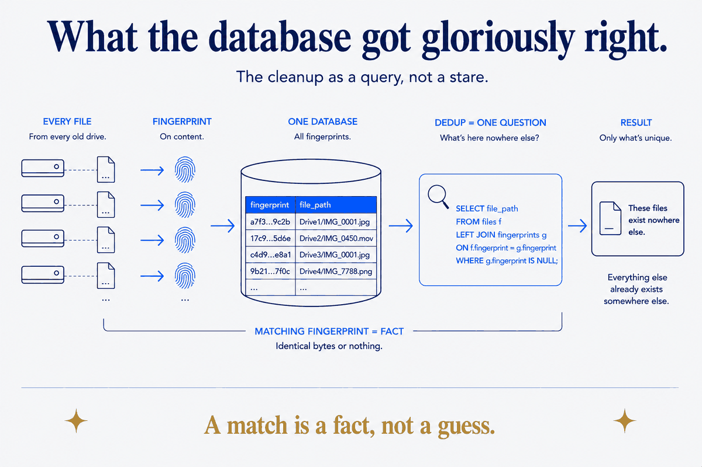

The chore that wanted to be a query
In a companion piece I described clearing a shoebox of old hard drives — the dread task everyone postpones — and the small system that made each drive cheaper to process than the last. That piece is about the discipline. This one is about the machinery underneath it, because building that machinery taught me something sharper than "get organised," and it applies far beyond a drawer of old disks.
The core move was simple to state: stop looking at old drives and start querying them. Every file on every rescued disk gets a fingerprint — a hash of its actual contents, not its name, because names lie constantly (the same photo gets renamed a dozen times across a decade of backups). Drop all those fingerprints into a database. Now "what's on this new drive that I don't already have somewhere safe?" stops being an afternoon of squinting at folders and becomes one line of SQL.
I put it in DuckDB — a local analytical database, a single file sitting next to my other data, no server to run. One table of sources, one row per drive. One table of files, one row per fingerprint. A handful of views: what's duplicated across drives, what's unique to each drive, how much space I'd reclaim by collapsing the copies. The whole cleanup became something I could ask questions of.
And the first time I ran it against a real disk, it told me something I didn't expect — and something quietly wrong.
What the database got gloriously right
I pointed the query at a 2 TB drive that reported as nearly full — and it turned out to hold barely 40% real data. Tens of thousands of the "files" were cloud placeholders: OneDrive and Google Drive stubs that look like files but are really just pointers to something in the cloud, holding no bytes at all. No amount of looking at that drive would have told me it was mostly air. One query did.
Then it deduplicated for real. Of one folder — a family member's photo collection, nearly 300 GB — it reported that 89% already existed, byte-for-byte, in my main library. Nine-tenths of that drive was a second copy of things I already had, and the database knew it with certainty, because a matching hash isn't a guess. It doesn't think two files are probably the same. It knows they are identical, byte for byte, or it says nothing. That's the whole appeal: a fingerprint match is a fact, and facts are what you want when the next step is "so it's safe to delete this copy."
This is the compounding part, too. The more drives I fed in, the more the database knew, and the less any future drive could surprise me. Each disk made the next one cheaper — the system got smarter as it ran. For a while it felt like I'd reduced an ambiguous human chore to a clean, mechanical, certain operation.

And then it confidently lied
I asked the database a slightly different question, about a different pile of old photos: how many of these already exist in my main library? And it answered, with total confidence: zero. None of them. All 96 GB is unique.
That was obviously false. I could see, just looking, that these were the same family photos I'd been organising for years. They were unmistakably in my library already. But the database — the thing I'd just been trusting to tell me hard facts — insisted every single one was new.
It wasn't broken. It was doing exactly what I built it to do, and that's the unsettling part. A content-hash compares bytes. And these photos, though identical to my eye, did not have identical bytes — because at some point my photo library had re-imported them: re-encoded the JPEG a hair differently, rewrote the embedded metadata, corrected a date. Same picture. Different bytes. Different fingerprint. And so, to a byte-hash, a completely different file.
It answered the question I actually asked — "are these the same bytes?" — flawlessly. It just wasn't the question I meant — "are these the same photo?" And nothing about the confident output told me those two questions had diverged. The certainty was real. It was also, for what I cared about, worthless.
A hash is exact. It is also naive. It knows byte-identity with total authority and knows nothing about meaning. Ask it whether two files are the same thing and it will answer a subtly different question — same bytes — and hand you the answer with a straight face.
The lesson isn't "hashes are bad"
The wrong conclusion is to distrust the tool. The hash did its job. The lesson is about the seam between an exact tool and the fuzzy thing you actually want.
For the photos, the fix is a different kind of matching — a perceptual hash, which fingerprints what the image looks like rather than the bytes it's made of, so a re-encoded copy still matches its original. It's fuzzier, slower, occasionally wrong in its own way, and exactly right for "is this the same picture?" The point isn't that one hash is better than the other. It's that they answer different questions, and the entire skill is knowing which question you're really asking before you trust the confident answer.
So I kept the two apart, on purpose. Byte-exact matching does the work it's certain about — the documents, the videos, the archives, the exact duplicate files — cheaply and safely, and I let it delete on that certainty without a second thought. The photos, where byte-identity and picture-identity come apart, get routed to the fuzzier, slower, human-supervised pass. Collapsing the two — trusting the exact tool on the question it's blind to — is precisely how you'd delete a photo that only looked like one you already had.
This is the shape of it: an exact, confident, mechanical check, wrapped around a question it doesn't quite understand. The certainty is genuine and the blindness is genuine and they live in the same instrument. In my drawer of old drives it was byte-hash versus perceptual-hash. In an organisation it's the same story wearing a suit: two customer records that match perfectly on ID and refer to two different people, or refer to the same person and match on nothing — the exact join is certain and wrong, and only a fuzzier, meaning-aware layer catches it. The tools change; the seam doesn't.
Structure, and knowing where it ends
The reason I find this satisfying rather than deflating is what happened at the edge. Building the structure — fingerprint everything, make the cleanup queryable — turned a hopeless chore into a system that compounds. That part did everything I hoped.
But the structure's real value showed up at its edge — at the moment it confidently returned a wrong answer and I had to know enough to not believe it. A system that only ever worked would have quietly deleted the photos it wrongly called duplicates, or wrongly kept the 96 GB it called unique, and I'd have been none the wiser either way. The system earned its keep precisely by having a knowable limit — a place where I could say "here the exact answer stops meaning what I need, hand this pile to a different tool."
That's the discipline underneath the tidy database: not "build the structure and trust the output," but build the structure, and know exactly where its certainty goes blind. An index that makes the next drive free is worth building. An index you'd follow off a cliff because it sounded sure of itself is worth fearing. The difference is entirely in whether you know where the naivety lives.
A hash is exact. It is also naive. The skill was never in getting the exact answer — the machine does that. It's in knowing which question you actually asked.